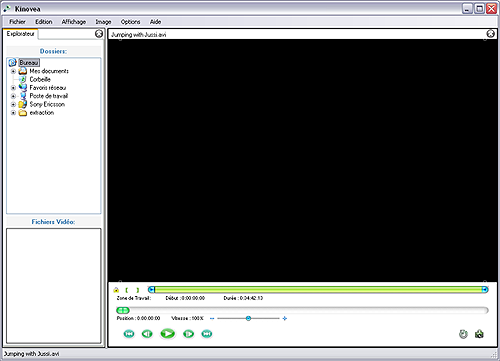
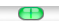
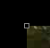
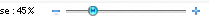

Visualizing Sport Motion
This step by step will guide you through the following :
Opening and playing a video, Setting up a Working Zone, Increasing image size, Slowing down replay.
1. Opening and playing a video.
Using the menu : File > Open, choose the video file of the competition or training session.
The video is loaded in a Play/Analyze screen.

Launch the playback through button :
2. Setting up a Working Zone.
Navigation cursor helps you jump from one point of the video to another :

We will specify a reduced area within the video to concentrate on a specific sequence.
Move to an interesting period and use the working zone start button :
Launch playback and let it run until the end of the sequence to analyze. Hit the working zone end button :
The navigation cursor is now more precise, since it expands in the Working Zone.
If the playback is in loop mode, the video will loop within the Working Zone.
3. Increasing image size.
If image seems too small, use the little square handles at the image
corners. Drag them until you are pleased with the image size.

4. Slowing down playback speed.
In order to better study the motion, slow down playback speed using the speed cursor.
